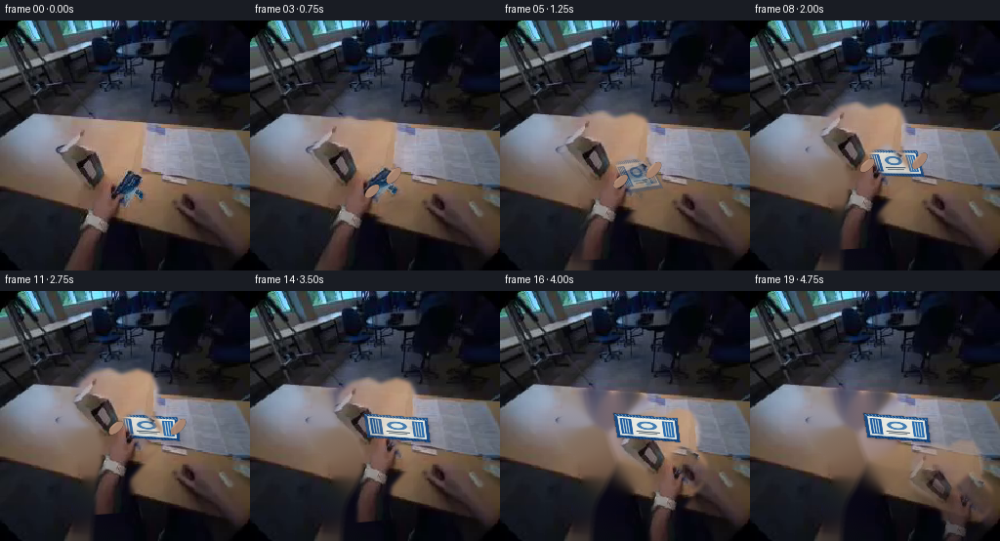
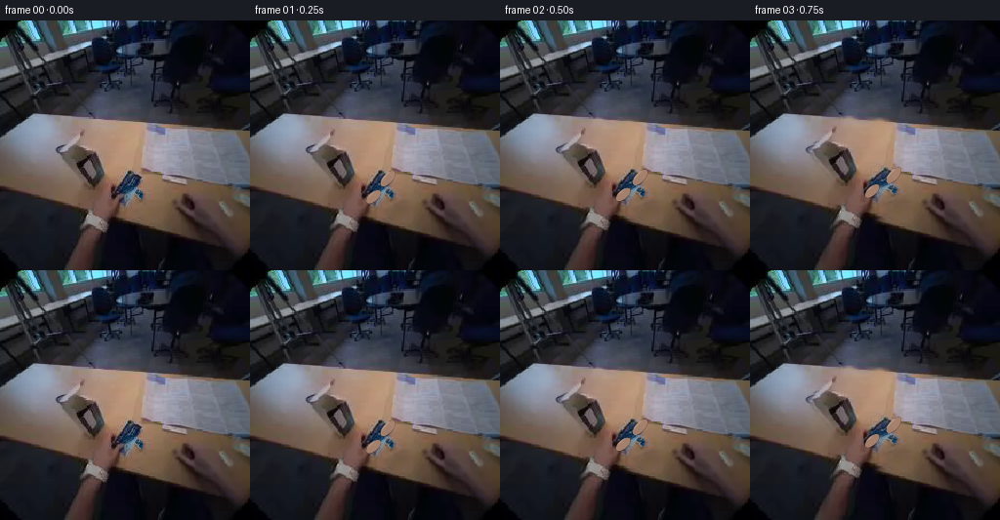

CODING AGENTS AS PIXEL WORLD MODELS
traex/GPT-5.6-Sol · common50_0022
点击播放 · 原生 RGB 像素
逐轮保存的候选
回放视频、检查图与代码变化。
每份候选均可单独播放。实际图片检查记录在下方工具轨迹中。
候选 01播放与检查图
点击播放 · 原生 RGB 像素


展开代码变化
--- 上一保存版本
+++ 本次保存版本
@@ -0,0 +1,236 @@
+from pathlib import Path
+import cv2
+import numpy as np
+from PIL import Image
+import artifact_io
+
+# PixelWorld case-common50-0022: deterministic, local RGB compositing only.
+ROOT = Path(__file__).resolve().parent
+SRC = np.asarray(Image.open(ROOT / "first_frame.png").convert("RGB"), dtype=np.uint8)
+H, W = SRC.shape[:2]
+SS = 3
+
+
+def smoothstep(a, b, x):
+ if a == b:
+ return float(x >= b)
+ z = np.clip((x-a)/(b-a), 0.0, 1.0)
+ return z*z*(3.0-2.0*z)
+
+
+def ease(x):
+ x = np.clip(x, 0.0, 1.0)
+ return 0.5 - 0.5*np.cos(np.pi*x)
+
+
+def poly_mask(points, blur=2.0):
+ m = np.zeros((H, W), np.float32)
+ cv2.fillPoly(m, [np.round(points).astype(np.int32)], 1.0, lineType=cv2.LINE_AA)
+ if blur:
+ m = cv2.GaussianBlur(m, (0, 0), blur)
+ return np.clip(m, 0, 1)
+
+
+def composite(dst, layer, alpha):
+ a = np.clip(alpha, 0, 1)[..., None]
+ return dst*(1-a) + layer.astype(np.float32)*a
+
+
+def quad_interp(a, b, u):
+ return np.asarray(a, np.float32)*(1-u) + np.asarray(b, np.float32)*u
+
+# In the supplied image the sachet is the narrow blue/white diagonal under the
+# fingertips. These coordinates are intentionally fixed so regeneration is exact.
+Q0 = np.float32([[113,158], [130,148], [155,183], [135,196]])
+Q1 = np.float32([[116,125], [181,129], [184,153], [120,149]])
+
+# Actual foreground hand silhouette. The soft mask retains photographed texture,
+# rather than replacing the real hand with an illustration.
+HAND_POLY = np.float32([
+ [65,128], [69,115], [82,105], [101,102], [113,109], [131,105],
+ [145,111], [151,127], [148,145], [144,153], [152,168], [151,182],
+ [143,194], [130,205], [114,221], [109,255], [76,255], [78,224],
+ [87,199], [88,179], [80,164], [67,153], [60,140]
+])
+hand_a0 = poly_mask(HAND_POLY, 2.0)
+packet_a0 = poly_mask(Q0, 1.0)
+# Avoid baking the held packet twice into the photographed hand cutout.
+hand_a0 *= (1.0 - cv2.GaussianBlur((packet_a0 > .12).astype(np.float32), (0,0), 2.2)*0.92)
+
+# Build a clean plate/table under the moving foreground. TELEA uses only nearby
+# pixels from this same first frame; low-frequency blending avoids telltale seams.
+remove = ((poly_mask(HAND_POLY, 0) > .1) | (poly_mask(Q0, 0) > .1)).astype(np.uint8)*255
+remove = cv2.dilate(remove, np.ones((9,9), np.uint8), iterations=1)
+bgr = cv2.cvtColor(SRC, cv2.COLOR_RGB2BGR)
+clean = cv2.cvtColor(cv2.inpaint(bgr, remove, 8, cv2.INPAINT_TELEA), cv2.COLOR_BGR2RGB)
+# Temper inpainting detail with nearby scene color while keeping original grain.
+cleanf = clean.astype(np.float32)
+cleanf = 0.82*cleanf + 0.18*cv2.GaussianBlur(cleanf, (0,0), 1.6)
+
+# Canonical sachet art, deliberately restrained to match the soft source image.
+def sachet_texture():
+ h, w, s = 42*SS, 96*SS, SS
+ tex = np.zeros((h,w,3), np.uint8)
+ # blue foil border and pale blue-white printed face
+ tex[:] = (26, 74, 129)
+ cv2.rectangle(tex, (5*s,4*s), (91*s,37*s), (214,222,221), -1, cv2.LINE_AA)
+ cv2.rectangle(tex, (8*s,7*s), (88*s,34*s), (231,231,224), -1, cv2.LINE_AA)
+ cv2.rectangle(tex, (8*s,7*s), (25*s,34*s), (32,91,158), -1, cv2.LINE_AA)
+ cv2.rectangle(tex, (72*s,7*s), (88*s,34*s), (38,105,172), -1, cv2.LINE_AA)
+ # central cool-blue label, logo and plausible fine package printing
+ cv2.ellipse(tex, (48*s,17*s), (15*s,7*s), 0, 0, 360, (67,123,174), -1, cv2.LINE_AA)
+ cv2.ellipse(tex, (48*s,17*s), (9*s,4*s), 0, 0, 360, (224,231,226), -1, cv2.LINE_AA)
+ cv2.line(tex, (31*s,28*s), (66*s,28*s), (75,91,105), s, cv2.LINE_AA)
+ cv2.line(tex, (34*s,31*s), (62*s,31*s), (117,125,126), s, cv2.LINE_AA)
+ for x in (12,16,20,76,80,84):
+ cv2.line(tex, (x*s,9*s), (x*s,32*s), (173,197,207), 1*s, cv2.LINE_AA)
+ # crimped foil seals and narrow highlights
+ for x in range(2,94,5):
+ cv2.line(tex, (x*s,1*s), ((x+2)*s,4*s), (92,142,185), s, cv2.LINE_AA)
+ cv2.line(tex, (x*s,38*s), ((x+2)*s,41*s), (13,54,105), s, cv2.LINE_AA)
+ cv2.line(tex, (6*s,6*s), (90*s,6*s), (248,244,227), s, cv2.LINE_AA)
+ # very light scene-matching softness
+ tex = cv2.GaussianBlur(tex, (0,0), .35*s)
+ return tex
+
+PACK = sachet_texture()
+PACK_CORNERS = np.float32([[0,0],[PACK.shape[1]-1,0],[PACK.shape[1]-1,PACK.shape[0]-1],[0,PACK.shape[0]-1]])
+
+
+def warp_full(image, mask, M):
+ wi = cv2.warpAffine(image, M, (W,H), flags=cv2.INTER_CUBIC, borderMode=cv2.BORDER_REFLECT_101)
+ wa = cv2.warpAffine(mask, M, (W,H), flags=cv2.INTER_LINEAR, borderMode=cv2.BORDER_CONSTANT)
+ return wi, np.clip(wa,0,1)
+
+
+def packet_layer(quad, use_source):
+ # Either move the genuine initial pixels or render the clearer canonical face.
+ if use_source:
+ M = cv2.getPerspectiveTransform(Q0, quad.astype(np.float32))
+ layer = cv2.warpPerspective(SRC, M, (W,H), flags=cv2.INTER_CUBIC,
+ borderMode=cv2.BORDER_REFLECT_101)
+ alpha = cv2.warpPerspective(packet_a0, M, (W,H), flags=cv2.INTER_LINEAR,
+ borderMode=cv2.BORDER_CONSTANT)
+ else:
+ M = cv2.getPerspectiveTransform(PACK_CORNERS, quad.astype(np.float32))
+ layer = cv2.warpPerspective(PACK, M, (W,H), flags=cv2.INTER_CUBIC,
+ borderMode=cv2.BORDER_CONSTANT)
+ raw = np.ones(PACK.shape[:2], np.float32)
+ alpha = cv2.warpPerspective(raw, M, (W,H), flags=cv2.INTER_LINEAR,
+ borderMode=cv2.BORDER_CONSTANT)
+ alpha = cv2.GaussianBlur(alpha, (0,0), .45)
+ return layer, np.clip(alpha,0,1)
+
+
+def add_contact_shadow(frame, quad, amount, airborne):
+ # Shadow offset and blur shrink naturally as the sachet reaches the table.
+ shquad = quad.copy()
+ shquad[:,0] += 2.0 + 6.0*airborne
+ shquad[:,1] += 2.0 + 8.0*airborne
+ sm = poly_mask(shquad, 2.0 + 3.0*airborne) * amount
+ dark = frame * (1.0 - (0.25-0.08*airborne)*sm[...,None])
+ return dark
+
+
+def finger_overlay(frame, quad, strength, release):
+ """Small textured fingertip occlusions clarify that the sachet is hand-held."""
+ if strength <= 0.001:
+ return frame
+ # Follow near/right package edge; fingers open slightly before vanishing.
+ q = quad
+ ptop = q[1]*.58 + q[2]*.42
+ pbot = q[0]*.38 + q[3]*.62
+ layer = np.zeros((H*SS,W*SS,3), np.uint8)
+ alpha = np.zeros((H*SS,W*SS), np.uint8)
+ skin = (169,132,111)
+ for j,(p,ang) in enumerate(((ptop, -48+release*18),(pbot,-42+release*24))):
+ c=(int(p[0]*SS + release*(5+j*3)*SS),int(p[1]*SS + release*(1+j)*SS))
+ axes=(int((10-j)*SS),int((4.8-j*.35)*SS))
+ cv2.ellipse(alpha,c,axes,ang,0,360,int(245*strength),-1,cv2.LINE_AA)
+ cv2.ellipse(layer,c,axes,ang,0,360,skin,-1,cv2.LINE_AA)
+ hi=(c[0]-2*SS,c[1]-2*SS)
+ cv2.ellipse(layer,hi,(max(1,axes[0]-3*SS),max(1,axes[1]-2*SS)),ang,195,345,(188,151,127),-1,cv2.LINE_AA)
+ layer=cv2.resize(layer,(W,H),interpolation=cv2.INTER_AREA)
+ alpha=cv2.resize(alpha,(W,H),interpolation=cv2.INTER_AREA).astype(np.float32)/255
+ return composite(frame,layer,alpha)
+
+
+def make_frame(index):
+ if index == 0:
+ return SRC.copy()
+ t = index/19.0
+ # Approach and lower: most of the action happens during the first 3 seconds.
+ approach = ease(min(t/0.60, 1.0))
+ settle = smoothstep(.45,.66,t)
+ quad = quad_interp(Q0, Q1, approach)
+ # minute settling compression after first table contact
+ if t > .60:
+ s = smoothstep(.60,.72,t)
+ quad[:,1] += np.array([0.0,1.0,1.3,.25],np.float32)*s
+
+ # Reveal the clean surface only where the photographed hand/item vacate it.
+ clear_mix = smoothstep(.02,.36,t)
+ base_alpha = cv2.GaussianBlur((remove/255.0).astype(np.float32),(0,0),2.4)*clear_mix
+ frame = composite(SRC.astype(np.float32), cleanf, base_alpha)
+
+ # Real photographed hand moves with the packet until contact, then withdraws
+ # toward the viewer's lower-right edge after releasing it.
+ if t < .66:
+ dx = (quad.mean(0)[0]-Q0.mean(0)[0]) * .84
+ dy = (quad.mean(0)[1]-Q0.mean(0)[1]) * .86
+ angle = 4.0*approach
+ scale = 1.0 - .035*approach
+ rel = 0.0
+ else:
+ r = ease((t-.66)/.34)
+ contact_center = quad.mean(0)
+ dx = (contact_center[0]-Q0.mean(0)[0])*.84 + 84*r
+ dy = (contact_center[1]-Q0.mean(0)[1])*.86 + 63*r
+ angle = 4 + 10*r
+ scale = .965 - .10*r
+ rel = r
+ center = tuple(Q0.mean(0))
+ M = cv2.getRotationMatrix2D(center, angle, scale)
+ M[:,2] += (dx,dy)
+ hand_layer, hand_alpha = warp_full(SRC, hand_a0, M)
+ # A mild fade only as the hand crosses out of frame, preventing a hard cutoff.
+ hand_alpha *= (1.0 - .45*smoothstep(.90,1.0,t))
+
+ airborne = 1.0 - settle
+ frame = add_contact_shadow(frame, quad, .72, airborne)
+
+ # Genuine source pixels dominate initially; blue/white printed face becomes
+ # clearer during rotation and is fully resolved when resting on the table.
+ src_packet, src_a = packet_layer(quad, True)
+ art_packet, art_a = packet_layer(quad, False)
+ art_mix = smoothstep(.12,.48,t)
+ frame = composite(frame, src_packet, src_a*(1-art_mix))
+ frame = composite(frame, art_packet, art_a*art_mix)
+
+ # Packet lies below gripping fingers/hand until the fingers release.
+ grip = 1.0 - smoothstep(.60,.75,t)
+ frame = composite(frame, hand_layer, hand_alpha*grip + hand_alpha*(1-grip)*.94)
+ frame = finger_overlay(frame, quad, grip, smoothstep(.55,.75,t))
+
+ # Restore the packet above the withdrawing palm after release: once let go it
+ # remains immobile and visibly separate on the tabletop.
+ if t >= .68:
+ top = smoothstep(.68,.76,t)
+ frame = composite(frame, art_packet, art_a*top)
+
+ # Subtle exposure response from a moving hand, without global synthetic motion.
+ vignette = np.ones((H,W),np.float32)
+ yy,xx=np.mgrid[:H,:W]
+ vignette -= .014*np.exp(-((xx-quad.mean(0)[0])**2+(yy-quad.mean(0)[1])**2)/(2*58**2))*airborne
+ frame *= vignette[...,None]
+ return np.clip(frame+0.5,0,255).astype(np.uint8)
+
+
+def main():
+ frames = np.stack([make_frame(i) for i in range(20)], axis=0)
+ assert frames.shape == (20,256,256,3) and frames.dtype == np.uint8
+ assert np.array_equal(frames[0], SRC)
+ artifact_io.save(frames, ROOT)
+
+if __name__ == "__main__":
+ main()
可观测工具轨迹
实际执行的命令与返回图片。
命令 1exit 0
/bin/bash -lc "cat prompt.txt && printf '\\n--- GENERATION_RULES ---\\n' && cat GENERATION_RULES.md"
命令 2exit 0
/bin/bash -lc "find . -maxdepth 2 -type f -printf '%p\\n' | sort && printf '\\n--- tools ---\\n' && (command -v ffmpeg || true) && (command -v python3 || true) && python3 - <<'PY'
from PIL import Image
im=Image.open('first_frame.png')
print('first_frame', im.mode, im.size)
PY"命令 3exit 0
/bin/bash -lc "cat task_spec.json && printf '\\n--- artifact_io.py ---\\n' && sed -n '1,240p' artifact_io.py"
命令 4exit 0
/bin/bash -lc "python3 - <<'PY'
from PIL import Image
import numpy as np
im=np.array(Image.open('first_frame.png'))
# overall and grid means/std
print('range',im.reshape(-1,3).min(0),im.reshape(-1,3).max(0),'mean',im.reshape(-1,3).mean(0))
for y in range(0,256,32):
row=[]
for x in range(0,256,32):
p=im[y:y+32,x:x+32].reshape(-1,3)
row.append('%3d,%3d,%3d/%2d'%(tuple(p.mean(0).astype(int))+(int(p.std()),)))
print(f'y{y:03}: '+' | '.join(row))
# color categories, boxes and counts
cats={
'blue':(im[:,:,2]>im[:,:,0]*1.15)&(im[:,:,2]>im[:,:,1]*1.05)&(im[:,:,2]>100),
'white':(im.min(2)>180)&((im.max(2)-im.min(2))<35),
'skin':(im[:,:,0]>im[:,:,1]*1.05)&(im[:,:,1]>im[:,:,2]*1.05)&(im[:,:,0]>90),
'brown':(im[:,:,0]>im[:,:,2]*1.15)&(im[:,:,1]>im[:,:,2]*1.05)&(im[:,:,0]>80),
}
for n,m in cats.items():
ys,xs=np.where(m)
print(n,len(xs), 'bbox', (xs.min(),ys.min(),xs.max(),ys.max()) if len(xs) else None)
# blocks counts category
for n,m in cats.items():
print('\\n',n)
for y in range(0,256,16):
print(' '.join(f'{m[y:y+16,x:x+16].sum():3}' for x in range(0,256,16)))
PY"命令 5exit 2
/bin/bash -lc "cat > /tmp/analyze.py <<'PY'
from PIL import Image
import numpy as np
im=np.array(Image.open('first_frame.png')).astype(float)
# kmeans deterministic on pixels
X=im.reshape(-1,3)
rng=np.random.default_rng(1)
c=X[rng.choice(len(X),14,replace=False)]
for _ in range(30):
d=((X[:,None]-c[None])**2).sum(2); lab=d.argmin(1)
nc=np.array([X[lab==i].mean(0) if np.any(lab==i) else c[i] for i in range(len(c))])
if np.max(abs(nc-c))<.1: break
c=nc
# order centroids by luminosity and color manually char
for i,v in enumerate(c): print(i, v.round(1), 'n',sum(lab==i))
L=lab.reshape(256,256)
# each 4x4 block majority label
chars='0123456789ABCD'
for y in range(0,256,4):
s=''
for x in range(0,256,4):
z=L[y:y+4,x:x+4].ravel(); s+=chars[np.bincount(z,minlength=14).argmax()]
print(s)
PY
python3 /tmp/analyze.py"命令 6exit 0
/bin/bash -lc "cat > .tmp/analyze.py <<'PY'
from PIL import Image
import numpy as np
im=np.array(Image.open('first_frame.png')).astype(float)
X=im.reshape(-1,3); rng=np.random.default_rng(1); c=X[rng.choice(len(X),14,replace=False)]
for _ in range(30):
d=((X[:,None]-c[None])**2).sum(2); lab=d.argmin(1)
nc=np.array([X[lab==i].mean(0) if np.any(lab==i) else c[i] for i in range(len(c))])
if np.max(abs(nc-c))<.1: break
c=nc
for i,v in enumerate(c): print(i, v.round(1), 'n',sum(lab==i))
L=lab.reshape(256,256); chars='0123456789ABCD'
for y in range(0,256,4):
s=''
for x in range(0,256,4):
z=L[y:y+4,x:x+4].ravel(); s+=chars[np.bincount(z,minlength=14).argmax()]
print(s)
PY
python3 .tmp/analyze.py"命令 7exit 0
/bin/bash -lc "python3 - <<'PY'
from PIL import Image
import numpy as np
from scipy import ndimage as ndi
im=np.array(Image.open('first_frame.png')).astype(int)
R,G,B=im.transpose(2,0,1); mx=im.max(2); mn=im.min(2)
for name,m in {
'cool8':(B-R>8)&(B-G>5)&(B>60),
'cool15':(B-R>15)&(B-G>8)&(B>65),
'lightcool':(B>100)&(B-R>5)&(B-G>4),
'bright':(R+G+B>330),
}.items():
m[:75]=0
l,n=ndi.label(ndi.binary_closing(m,iterations=2))
objs=ndi.find_objects(l)
comps=[]
for i,o in enumerate(objs,1):
if o:
area=(l[o]==i).sum()
if area>25:
comps.append((area,(o[1].start,o[0].start,o[1].stop-1,o[0].stop-1)))
print(name, sorted(comps,reverse=True)[:20])
# summaries for candidate boxes: mean, PCA of cool points, gradient energies
for box in [(0,80,80,155),(190,105,256,190),(60,90,160,170),(80,120,200,220)]:
x0,y0,x1,y1=box;p=im[y0:y1,x0:x1]
print(box,'mean',p.reshape(-1,3).mean(0).round(1),'minmax',p.reshape(-1,3).min(0),p.reshape(-1,3).max(0),'cool',((p[:,:,2]-p[:,:,0]>8)&(p[:,:,2]-p[:,:,1]>5)).mean())
# edge sums per 8 block
f=im.mean(2); gx=abs(np.diff(f,axis=1,prepend=f[:,:1])); gy=abs(np.diff(f,axis=0,prepend=f[:1])); e=gx+gy
print('edge grid')
for y in range(64,224,8):
print(y,' '.join(f'{e[y:y+8,x:x+8].mean():2.0f}' for x in range(0,256,8)))
PY"命令 8exit 0
/bin/bash -lc "python3 - <<'PY'
from PIL import Image
import numpy as np
im=np.array(Image.open('first_frame.png'))
for y in range(88,193,4):
print('\\ny',y)
for x in range(0,256,8):
p=np.median(im[y:y+4,x:x+8].reshape(-1,3),0).astype(int)
print(f'{x:03}:{p[0]:02x}{p[1]:02x}{p[2]:02x}',end=' ')
print()
PY"命令 9exit 0
/bin/bash -lc "python3 - <<'PY'
try:
import cv2; print('cv2',cv2.__version__)
except Exception as e: print(e)
PY"命令 10exit 0
/bin/bash -lc "python3 - <<'PY'
from PIL import Image
import numpy as np
im=np.array(Image.open('first_frame.png')).astype(int);R,G,B=im.transpose(2,0,1)
# classifications: C light cool, c cool, S warm skin, d dark
for y in range(88,166,2):
s=''
for x in range(0,180,2):
p=im[y:y+2,x:x+2].reshape(-1,3).mean(0);r,g,b=p
if b>100 and b-r>4 and b-g>3: q='C'
elif b-r>10 and b-g>5 and b>55:q='c'
elif r-g>10 and r-b>10 and r>100:q='S'
elif max(p)<50:q='.'
else:q=' '
s+=q
print(f'{y:3} {s}')
PY"命令 11exit 0
/bin/bash -lc "python3 - <<'PY'
import cv2, numpy as np
im=cv2.imread('first_frame.png'); g=cv2.cvtColor(im,cv2.COLOR_BGR2GRAY)
for th1,th2 in [(30,60),(50,100),(80,150)]:
e=cv2.Canny(g,th1,th2)
l=cv2.HoughLinesP(e,1,np.pi/180,threshold=20,minLineLength=20,maxLineGap=5)
print('\\n',th1)
if l is not None:
arr=[]
for x1,y1,x2,y2 in l[:,0]:
if y1>70 or y2>70:
arr.append((round(np.hypot(x2-x1,y2-y1)),(x1,y1,x2,y2)))
for z in sorted(arr,reverse=True)[:50]:print(z)
PY"命令 12exit 0
/bin/bash -lc "command -v chafa || true; command -v viu || true; command -v jp2 || true; python3 - <<'PY'
from PIL import Image
im=Image.open('first_frame.png').resize((64,32))
a=list(im.getdata())
# ANSI truecolor half blocks (top fg, bottom bg)
for y in range(0,32,2):
for x in range(64):
t=a[y*64+x]; b=a[(y+1)*64+x]
print(f'\\x1b[38;2;{t[0]};{t[1]};{t[2]}m\\x1b[48;2;{b[0]};{b[1]};{b[2]}mâ',end='')
print('\\x1b[0m')
PY"命令 13exit 0
/bin/bash -lc "python3 - <<'PY'
import cv2,numpy as np
from PIL import Image
im=np.array(Image.open('first_frame.png')); h,w=im.shape[:2]
polys={
'A_packet?':[(137,153),(204,162),(192,222),(105,208)],
'B_left':[(0,119),(34,96),(79,98),(98,127),(59,155),(0,151)],
'C_right':[(145,104),(243,108),(255,170),(207,168),(191,157),(145,154)],
'D_table':[(70,100),(143,103),(145,150),(104,154),(70,135)],
}
for n,p in polys.items():
m=np.zeros((h,w),np.uint8);cv2.fillPoly(m,[np.array(p,np.int32)],1)
x=im[m>0];
print(n,len(x),'mean',x.mean(0),'std',x.std(0),'q10,50,90',np.quantile(x,[.1,.5,.9],axis=0))
# 8 k colors
X=x.astype(float); c=X[np.linspace(0,len(X)-1,8).astype(int)]
for z in range(10):
lab=((X[:,None]-c)**2).sum(2).argmin(1)
c=np.array([X[lab==i].mean(0) if np.any(lab==i) else c[i] for i in range(8)])
print(sorted([(sum(lab==i),tuple(v.round().astype(int))) for i,v in enumerate(c)],reverse=True))
PY"命令 14exit 0
/bin/bash -lc "cat > generate.py <<'PY'
from pathlib import Path
import cv2
import numpy as np
from PIL import Image
import artifact_io
# PixelWorld case-common50-0022: deterministic, local RGB compositing only.
ROOT = Path(__file__).resolve().parent
SRC = np.asarray(Image.open(ROOT / \"first_frame.png\").convert(\"RGB\"), dtype=np.uint8)
H, W = SRC.shape[:2]
SS = 3
def smoothstep(a, b, x):
if a == b:
return float(x >= b)
z = np.clip((x-a)/(b-a), 0.0, 1.0)
return z*z*(3.0-2.0*z)
def ease(x):
x = np.clip(x, 0.0, 1.0)
return 0.5 - 0.5*np.cos(np.pi*x)
def poly_mask(points, blur=2.0):
m = np.zeros((H, W), np.float32)
cv2.fillPoly(m, [np.round(points).astype(np.int32)], 1.0, lineType=cv2.LINE_AA)
if blur:
m = cv2.GaussianBlur(m, (0, 0), blur)
return np.clip(m, 0, 1)
def composite(dst, layer, alpha):
a = np.clip(alpha, 0, 1)[..., None]
return dst*(1-a) + layer.astype(np.float32)*a
def quad_interp(a, b, u):
return np.asarray(a, np.float32)*(1-u) + np.asarray(b, np.float32)*u
# In the supplied image the sachet is the narrow blue/white diagonal under the
# fingertips. These coordinates are intentionally fixed so regeneration is exact.
Q0 = np.float32([[113,158], [130,148], [155,183], [135,196]])
Q1 = np.float32([[116,125], [181,129], [184,153], [120,149]])
# Actual foreground hand silhouette. The soft mask retains photographed texture,
# rather than replacing the real hand with an illustration.
HAND_POLY = np.float32([
[65,128], [69,115], [82,105], [101,102], [113,109], [131,105],
[145,111], [151,127], [148,145], [144,153], [152,168], [151,182],
[143,194], [130,205], [114,221], [109,255], [76,255], [78,224],
[87,199], [88,179], [80,164], [67,153], [60,140]
])
hand_a0 = poly_mask(HAND_POLY, 2.0)
packet_a0 = poly_mask(Q0, 1.0)
# Avoid baking the held packet twice into the photographed hand cutout.
hand_a0 *= (1.0 - cv2.GaussianBlur((packet_a0 > .12).astype(np.float32), (0,0), 2.2)*0.92)
# Build a clean plate/table under the moving foreground. TELEA uses only nearby
# pixels from this same first frame; low-frequency blending avoids telltale seams.
remove = ((poly_mask(HAND_POLY, 0) > .1) | (poly_mask(Q0, 0) > .1)).astype(np.uint8)*255
remove = cv2.dilate(remove, np.ones((9,9), np.uint8), iterations=1)
bgr = cv2.cvtColor(SRC, cv2.COLOR_RGB2BGR)
clean = cv2.cvtColor(cv2.inpaint(bgr, remove, 8, cv2.INPAINT_TELEA), cv2.COLOR_BGR2RGB)
# Temper inpainting detail with nearby scene color while keeping original grain.
cleanf = clean.astype(np.float32)
cleanf = 0.82*cleanf + 0.18*cv2.GaussianBlur(cleanf, (0,0), 1.6)
# Canonical sachet art, deliberately restrained to match the soft source image.
def sachet_texture():
h, w, s = 42*SS, 96*SS, SS
tex = np.zeros((h,w,3), np.uint8)
# blue foil border and pale blue-white printed face
tex[:] = (26, 74, 129)
cv2.rectangle(tex, (5*s,4*s), (91*s,37*s), (214,222,221), -1, cv2.LINE_AA)
cv2.rectangle(tex, (8*s,7*s), (88*s,34*s), (231,231,224), -1, cv2.LINE_AA)
cv2.rectangle(tex, (8*s,7*s), (25*s,34*s), (32,91,158), -1, cv2.LINE_AA)
cv2.rectangle(tex, (72*s,7*s), (88*s,34*s), (38,105,172), -1, cv2.LINE_AA)
# central cool-blue label, logo and plausible fine package printing
cv2.ellipse(tex, (48*s,17*s), (15*s,7*s), 0, 0, 360, (67,123,174), -1, cv2.LINE_AA)
cv2.ellipse(tex, (48*s,17*s), (9*s,4*s), 0, 0, 360, (224,231,226), -1, cv2.LINE_AA)
cv2.line(tex, (31*s,28*s), (66*s,28*s), (75,91,105), s, cv2.LINE_AA)
cv2.line(tex, (34*s,31*s), (62*s,31*s), (117,125,126), s, cv2.LINE_AA)
for x in (12,16,20,76,80,84):
cv2.line(tex, (x*s,9*s), (x*s,32*s), (173,197,207), 1*s, cv2.LINE_AA)
# crimped foil seals and narrow highlights
for x in range(2,94,5):
cv2.line(tex, (x*s,1*s), ((x+2)*s,4*s), (92,142,185), s, cv2.LINE_AA)
cv2.line(tex, (x*s,38*s), ((x+2)*s,41*s), (13,54,105), s, cv2.LINE_AA)
cv2.line(tex, (6*s,6*s), (90*s,6*s), (248,244,227), s, cv2.LINE_AA)
# very light scene-matching softness
tex = cv2.GaussianBlur(tex, (0,0), .35*s)
return tex
PACK = sachet_texture()
PACK_CORNERS = np.float32([[0,0],[PACK.shape[1]-1,0],[PACK.shape[1]-1,PACK.shape[0]-1],[0,PACK.shape[0]-1]])
def warp_full(image, mask, M):
wi = cv2.warpAffine(image, M, (W,H), flags=cv2.INTER_CUBIC, borderMode=cv2.BORDER_REFLECT_101)
wa = cv2.warpAffine(mask, M, (W,H), flags=cv2.INTER_LINEAR, borderMode=cv2.BORDER_CONSTANT)
return wi, np.clip(wa,0,1)
def packet_layer(quad, use_source):
# Either move the genuine initial pixels or render the clearer canonical face.
if use_source:
M = cv2.getPerspectiveTransform(Q0, quad.astype(np.float32))
layer = cv2.warpPerspective(SRC, M, (W,H), flags=cv2.INTER_CUBIC,
borderMode=cv2.BORDER_REFLECT_101)
alpha = cv2.warpPerspective(packet_a0, M, (W,H), flags=cv2.INTER_LINEAR,
borderMode=cv2.BORDER_CONSTANT)
else:
M = cv2.getPerspectiveTransform(PACK_CORNERS, quad.astype(np.float32))
layer = cv2.warpPerspective(PACK, M, (W,H), flags=cv2.INTER_CUBIC,
borderMode=cv2.BORDER_CONSTANT)
raw = np.ones(PACK.shape[:2], np.float32)
alpha = cv2.warpPerspective(raw, M, (W,H), flags=cv2.INTER_LINEAR,
borderMode=cv2.BORDER_CONSTANT)
alpha = cv2.GaussianBlur(alpha, (0,0), .45)
return layer, np.clip(alpha,0,1)
def add_contact_shadow(frame, quad, amount, airborne):
# Shadow offset and blur shrink naturally as the sachet reaches the table.
shquad = quad.copy()
shquad[:,0] += 2.0 + 6.0*airborne
shquad[:,1] += 2.0 + 8.0*airborne
sm = poly_mask(shquad, 2.0 + 3.0*airborne) * amount
dark = frame * (1.0 - (0.25-0.08*airborne)*sm[...,None])
return dark
def finger_overlay(frame, quad, strength, release):
\"\"\"Small textured fingertip occlusions clarify that the sachet is hand-held.\"\"\"
if strength <= 0.001:
return frame
# Follow near/right package edge; fingers open slightly before vanishing.
q = quad
ptop = q[1]*.58 + q[2]*.42
pbot = q[0]*.38 + q[3]*.62
layer = np.zeros((H*SS,W*SS,3), np.uint8)
alpha = np.zeros((H*SS,W*SS), np.uint8)
skin = (169,132,111)
for j,(p,ang) in enumerate(((ptop, -48+release*18),(pbot,-42+release*24))):
c=(int(p[0]*SS + release*(5+j*3)*SS),int(p[1]*SS + release*(1+j)*SS))
axes=(int((10-j)*SS),int((4.8-j*.35)*SS))
cv2.ellipse(alpha,c,axes,ang,0,360,int(245*strength),-1,cv2.LINE_AA)
cv2.ellipse(layer,c,axes,ang,0,360,skin,-1,cv2.LINE_AA)
hi=(c[0]-2*SS,c[1]-2*SS)
cv2.ellipse(layer,hi,(max(1,axes[0]-3*SS),max(1,axes[1]-2*SS)),ang,195,345,(188,151,127),-1,cv2.LINE_AA)
layer=cv2.resize(layer,(W,H),interpolation=cv2.INTER_AREA)
alpha=cv2.resize(alpha,(W,H),interpolation=cv2.INTER_AREA).astype(np.float32)/255
return composite(frame,layer,alpha)
def make_frame(index):
if index == 0:
return SRC.copy()
t = index/19.0
# Approach and lower: most of the action happens during the first 3 seconds.
approach = ease(min(t/0.60, 1.0))
settle = smoothstep(.45,.66,t)
quad = quad_interp(Q0, Q1, approach)
# minute settling compression after first table contact
if t > .60:
s = smoothstep(.60,.72,t)
quad[:,1] += np.array([0.0,1.0,1.3,.25],np.float32)*s
# Reveal the clean surface only where the photographed hand/item vacate it.
clear_mix = smoothstep(.02,.36,t)
base_alpha = cv2.GaussianBlur((remove/255.0).astype(np.float32),(0,0),2.4)*clear_mix
frame = composite(SRC.astype(np.float32), cleanf, base_alpha)
# Real photographed hand moves with the packet until contact, then withdraws
# toward the viewer's lower-right edge after releasing it.
if t < .66:
dx = (quad.mean(0)[0]-Q0.mean(0)[0]) * .84
dy = (quad.mean(0)[1]-Q0.mean(0)[1]) * .86
angle = 4.0*approach
scale = 1.0 - .035*approach
rel = 0.0
else:
r = ease((t-.66)/.34)
contact_center = quad.mean(0)
dx = (contact_center[0]-Q0.mean(0)[0])*.84 + 84*r
dy = (contact_center[1]-Q0.mean(0)[1])*.86 + 63*r
angle = 4 + 10*r
scale = .965 - .10*r
rel = r
center = tuple(Q0.mean(0))
M = cv2.getRotationMatrix2D(center, angle, scale)
M[:,2] += (dx,dy)
hand_layer, hand_alpha = warp_full(SRC, hand_a0, M)
# A mild fade only as the hand crosses out of frame, preventing a hard cutoff.
hand_alpha *= (1.0 - .45*smoothstep(.90,1.0,t))
airborne = 1.0 - settle
frame = add_contact_shadow(frame, quad, .72, airborne)
# Genuine source pixels dominate initially; blue/white printed face becomes
# clearer during rotation and is fully resolved when resting on the table.
src_packet, src_a = packet_layer(quad, True)
art_packet, art_a = packet_layer(quad, False)
art_mix = smoothstep(.12,.48,t)
frame = composite(frame, src_packet, src_a*(1-art_mix))
frame = composite(frame, art_packet, art_a*art_mix)
# Packet lies below gripping fingers/hand until the fingers release.
grip = 1.0 - smoothstep(.60,.75,t)
frame = composite(frame, hand_layer, hand_alpha*grip + hand_alpha*(1-grip)*.94)
frame = finger_overlay(frame, quad, grip, smoothstep(.55,.75,t))
# Restore the packet above the withdrawing palm after release: once let go it
# remains immobile and visibly separate on the tabletop.
if t >= .68:
top = smoothstep(.68,.76,t)
frame = composite(frame, art_packet, art_a*top)
# Subtle exposure response from a moving hand, without global synthetic motion.
vignette = np.ones((H,W),np.float32)
yy,xx=np.mgrid[:H,:W]
vignette -= .014*np.exp(-((xx-quad.mean(0)[0])**2+(yy-quad.mean(0)[1])**2)/(2*58**2))*airborne
frame *= vignette[...,None]
return np.clip(frame+0.5,0,255).astype(np.uint8)
def main():
frames = np.stack([make_frame(i) for i in range(20)], axis=0)
assert frames.shape == (20,256,256,3) and frames.dtype == np.uint8
assert np.array_equal(frames[0], SRC)
artifact_io.save(frames, ROOT)
if __name__ == \"__main__\":
main()
PY
python3 generate.py
python3 - <<'PY'
import numpy as np
from PIL import Image
z=np.load('pixels.npz')['pixels']
print('pixels',z.shape,z.dtype)
f=np.stack([np.array(Image.open(f'frames/{i:02d}.png')) for i in range(20)])
s=np.array(Image.open('first_frame.png'))
print('frame0 identical',np.array_equal(f[0],s))
for i in range(20):
d=np.abs(f[i].astype(int)-f[max(i-1,0)].astype(int))
print(i,'mean_delta',round(d.mean(),2),'changed',round((d.max(2)>4).mean(),3),'mean_rgb',np.round(f[i].mean((0,1)),1))
PY"命令 15exit 0
/bin/bash -lc 'python3 -m py_compile generate.py && ls -lh pixels.npz index.html inspection.png transition_check.png frames/00.png frames/19.png && sha256sum first_frame.png frames/00.png && git status --short 2>/dev/null || true'
命令 16exit 0
/bin/bash -lc "python3 - <<'PY'
import cv2, numpy as np
from PIL import Image
from scipy import ndimage as ndi
F=np.stack([np.array(Image.open(f'frames/{i:02d}.png')) for i in range(20)])
S=F[0].astype(int)
print('frame motion audit')
for i in [0,1,3,6,9,11,12,13,15,17,19]:
im=F[i].astype(int); d=np.max(abs(im-S),2)>12
l,n=ndi.label(d); areas=np.bincount(l.ravel())[1:]
y,x=np.where(d)
cool=(im[:,:,2]-im[:,:,0]>18)&(im[:,:,2]-im[:,:,1]>8)&(im[:,:,2]>80)
# destination package ROI versus scene
roi=cool[115:160,105:195]
print(i,'diff_bbox',None if not len(x) else (x.min(),y.min(),x.max(),y.max()),'largest',sorted(areas,reverse=True)[:3], 'dest_cool',roi.sum())
# final blue component boxes
im=F[-1].astype(int); m=(im[:,:,2]-im[:,:,0]>18)&(im[:,:,2]-im[:,:,1]>8)&(im[:,:,2]>80)
l,n=ndi.label(ndi.binary_closing(m,iterations=1)); out=[]
for k,o in enumerate(ndi.find_objects(l),1):
if o:
a=(l[o]==k).sum()
if a>50:out.append((a,(o[1].start,o[0].start,o[1].stop-1,o[0].stop-1)))
print('final cool comps',sorted(out,reverse=True)[:10])
# frozen object stability after release, excluding hand overlap changes
for i in range(15,20):
q=F[i,122:157,112:190].astype(int)
print('late packet delta',i,round(abs(q-F[14,122:157,112:190].astype(int)).mean(),2))
PY"保存候选 1 份；完成命令 16 次；可验证图片返回 0 张。原始 API 响应与完整日志保留在本地。